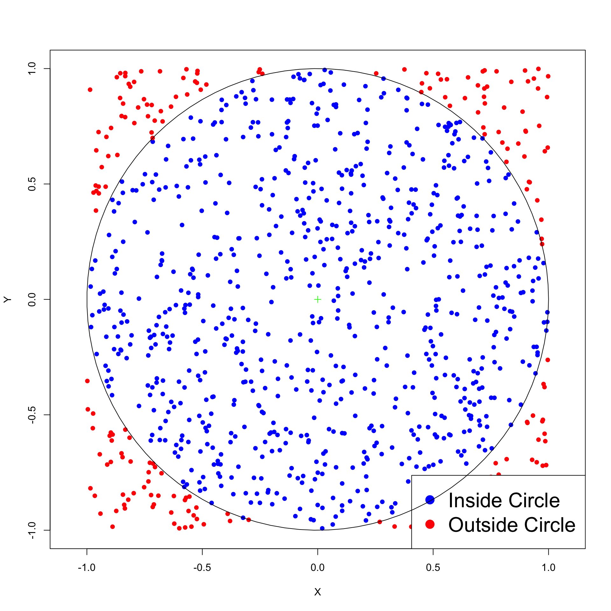

[1] 0.03 0.03 0.03 0.06 0.06 0.06 0.08 0.08 0.08 0.09 0.09 0.09 0.02 0.02 0.02
[16] 0.06 0.06 0.06Statistical Models
Lecture 6
Lecture 6:
Contingency tables &
Simulation
Outline of Lecture 6
- Goodness-of-fit test for Contingency tables
- Worked Example
- Chi-squared test of independence
- Worked Example
- Monte Carlo simulations
- Simulating p-values
- The Bootstrap
Part 1:
Goodness-of-fit test for
Contingency tables
Two-way Contigency Tables: Table in which each observation is classified in 2 ways
Example:
Relative performance of Man Utd managers
Two classifications for each game: Result, and Manager in charge
| Manager | Won | Drawn | Lost |
|---|---|---|---|
| Moyes | 27 | 9 | 15 |
| Van Gaal | 54 | 25 | 24 |
| Mourinho | 84 | 32 | 28 |
| Solskjaer | 91 | 37 | 40 |
| Rangnick | 11 | 10 | 8 |
| ten Hag | 61 | 12 | 28 |
Contingency tables: Abstract definition
| Y = 1 | Y = 2 | \ldots | Y = C | Totals | |
|---|---|---|---|---|---|
| X = 1 | O_{11} | O_{12} | \ldots | O_{1C} | O_{1+} |
| X = 2 | O_{21} | O_{22} | \ldots | O_{2C} | O_{2+} |
| \cdots | \cdots | \cdots | \ldots | \cdots | \cdots |
| X = R | O_{R1} | O_{R2} | \ldots | O_{RC} | O_{R+} |
| Totals | O_{+1} | O_{+2} | \ldots | O_{+C} | m |
- Each observation
- has attached two categories X and Y
- can only belong to one category (X,Y) = (i,j)
- O_{ij} is the count of observations with (X,Y) = (i,j)
- Table has R rows and C columns, for total of n = RC categories
Contingency tables: Abstract definition
| Y = 1 | Y = 2 | \ldots | Y = C | Totals | |
|---|---|---|---|---|---|
| X = 1 | O_{11} | O_{12} | \ldots | O_{1C} | O_{1+} |
| X = 2 | O_{21} | O_{22} | \ldots | O_{2C} | O_{2+} |
| \cdots | \cdots | \cdots | \ldots | \cdots | \cdots |
| X = R | O_{R1} | O_{R2} | \ldots | O_{RC} | O_{R+} |
| Totals | O_{+1} | O_{+2} | \ldots | O_{+C} | m |
- plus symbol in subscript denotes sum over that subscript. Example
O_{R+} = \sum_{j=1}^C O_{Rj} \qquad \quad O_{+2} = \sum_{i=1}^R O_{i2}
Contingency tables: Abstract definition
| Y = 1 | Y = 2 | \ldots | Y = C | Totals | |
|---|---|---|---|---|---|
| X = 1 | O_{11} | O_{12} | \ldots | O_{1C} | O_{1+} |
| X = 2 | O_{21} | O_{22} | \ldots | O_{2C} | O_{2+} |
| \cdots | \cdots | \cdots | \ldots | \cdots | \cdots |
| X = R | O_{R1} | O_{R2} | \ldots | O_{RC} | O_{R+} |
| Totals | O_{+1} | O_{+2} | \ldots | O_{+C} | m |
- The total count is
m = O_{++} = \sum_{i=1}^R \sum_{j=1}^C O_{ij}
Contingency tables: Abstract definition
| Y = 1 | Y = 2 | \ldots | Y = C | Totals | |
|---|---|---|---|---|---|
| X = 1 | O_{11} | O_{12} | \ldots | O_{1C} | O_{1+} |
| X = 2 | O_{21} | O_{22} | \ldots | O_{2C} | O_{2+} |
| \cdots | \cdots | \cdots | \ldots | \cdots | \cdots |
| X = R | O_{R1} | O_{R2} | \ldots | O_{RC} | O_{R+} |
| Totals | O_{+1} | O_{+2} | \ldots | O_{+C} | m |
- The marginal counts sum to m as well
\sum_{i=1}^R O_{i+} = \sum_{i=1}^R \sum_{j=1}^C O_{ij} = m
Contingency tables: Abstract definition
| Y = 1 | Y = 2 | \ldots | Y = C | Totals | |
|---|---|---|---|---|---|
| X = 1 | O_{11} | O_{12} | \ldots | O_{1C} | O_{1+} |
| X = 2 | O_{21} | O_{22} | \ldots | O_{2C} | O_{2+} |
| \cdots | \cdots | \cdots | \ldots | \cdots | \cdots |
| X = R | O_{R1} | O_{R2} | \ldots | O_{RC} | O_{R+} |
| Totals | O_{+1} | O_{+2} | \ldots | O_{+C} | m |
- The marginal counts sum to m as well
\sum_{j=1}^C O_{+j} = \sum_{j=1}^C \sum_{i=1}^R O_{ij} = m
Contingency tables: Probabilities
| Y = 1 | Y = 2 | \ldots | Y = C | Totals | |
|---|---|---|---|---|---|
| X = 1 | p_{11} | p_{12} | \ldots | p_{1C} | p_{1+} |
| X = 2 | p_{21} | p_{22} | \ldots | p_{2C} | p_{2+} |
| \cdots | \cdots | \cdots | \ldots | \cdots | \cdots |
| X = R | p_{R1} | p_{R2} | \ldots | p_{RC} | p_{R+} |
| Totals | p_{+1} | p_{+2} | \ldots | p_{+C} | 1 |
- Observation in cell (i,j) happens with probability
p_{ij} := P(X = i , Y = j)
Contingency tables: Probabilities
| Y = 1 | Y = 2 | \ldots | Y = C | Totals | |
|---|---|---|---|---|---|
| X = 1 | p_{11} | p_{12} | \ldots | p_{1C} | p_{1+} |
| X = 2 | p_{21} | p_{22} | \ldots | p_{2C} | p_{2+} |
| \cdots | \cdots | \cdots | \ldots | \cdots | \cdots |
| X = R | p_{R1} | p_{R2} | \ldots | p_{RC} | p_{R+} |
| Totals | p_{+1} | p_{+2} | \ldots | p_{+C} | 1 |
- The marginal probabilities that X = i or Y = j are at the margins of table
P(X = i) = \sum_{j=1}^C P(X = i , Y = j) = \sum_{j=1}^C p_{ij} = p_{i+}
Contingency tables: Probabilities
| Y = 1 | Y = 2 | \ldots | Y = C | Totals | |
|---|---|---|---|---|---|
| X = 1 | p_{11} | p_{12} | \ldots | p_{1C} | p_{1+} |
| X = 2 | p_{21} | p_{22} | \ldots | p_{2C} | p_{2+} |
| \cdots | \cdots | \cdots | \ldots | \cdots | \cdots |
| X = R | p_{R1} | p_{R2} | \ldots | p_{RC} | p_{R+} |
| Totals | p_{+1} | p_{+2} | \ldots | p_{+C} | 1 |
- The marginal probabilities that X = i or Y = j are at the margins of table
P(Y = j) = \sum_{i=1}^R P(X = i , Y = j) = \sum_{i=1}^R p_{ij} = p_{+j}
Contingency tables: Probabilities
| Y = 1 | Y = 2 | \ldots | Y = C | Totals | |
|---|---|---|---|---|---|
| X = 1 | p_{11} | p_{12} | \ldots | p_{1C} | p_{1+} |
| X = 2 | p_{21} | p_{22} | \ldots | p_{2C} | p_{2+} |
| \cdots | \cdots | \cdots | \ldots | \cdots | \cdots |
| X = R | p_{R1} | p_{R2} | \ldots | p_{RC} | p_{R+} |
| Totals | p_{+1} | p_{+2} | \ldots | p_{+C} | 1 |
- Marginal probabilities sum to 1
\sum_{i=1}^R p_{i+} = \sum_{i=1}^R P(X = i) = \sum_{i=1}^R \sum_{j=1}^C P(X = i , Y = j) = 1
Contingency tables: Probabilities
| Y = 1 | Y = 2 | \ldots | Y = C | Totals | |
|---|---|---|---|---|---|
| X = 1 | p_{11} | p_{12} | \ldots | p_{1C} | p_{1+} |
| X = 2 | p_{21} | p_{22} | \ldots | p_{2C} | p_{2+} |
| \cdots | \cdots | \cdots | \ldots | \cdots | \cdots |
| X = R | p_{R1} | p_{R2} | \ldots | p_{RC} | p_{R+} |
| Totals | p_{+1} | p_{+2} | \ldots | p_{+C} | 1 |
- Marginal probabilities sum to 1
\sum_{j=1}^C p_{+j} = \sum_{j=1}^C P(X = j) = \sum_{j=1}^R \sum_{j=1}^C P(X = i , Y = j) = 1
Multinomial distribution
Counts O_{ij} and probabilities p_{ij} can be assembled into R \times C matrices O = \left( \begin{array}{ccc} O_{11} & \ldots & O_{1C} \\ \vdots & \ddots & \vdots \\ O_{R1} & \ldots & O_{RC} \\ \end{array} \right) \qquad \qquad p = \left( \begin{array}{ccc} p_{11} & \ldots & p_{1C} \\ \vdots & \ddots & \vdots \\ p_{R1} & \ldots & p_{RC} \\ \end{array} \right)
This way the random matrix O has multinomial distribution O \sim \mathop{\mathrm{Mult}}(m,p)
The counts O_{ij} are therefore binomial O_{ij} \sim \mathop{\mathrm{Bin}}(m,p_{ij})
Multinomial distribution
We can also consider the marginal random vectors (O_{1+}, \ldots, O_{R+}) \qquad \qquad (O_{+1}, \ldots, O_{+C})
These have also multinomial distribution (O_{1+}, \ldots, O_{R+}) \sim \mathop{\mathrm{Mult}}(m, p_{1+}, \ldots, p_{R+}) (O_{+1}, \ldots, O_{+C}) \sim \mathop{\mathrm{Mult}}(m, p_{+1}, \ldots, p_{+C})
Expected counts
| Y = 1 | Y = 2 | \ldots | Y = C | Totals | |
|---|---|---|---|---|---|
| X = 1 | O_{11} | O_{12} | \ldots | O_{1C} | O_{1+} |
| X = 2 | O_{21} | O_{22} | \ldots | O_{2C} | O_{2+} |
| \cdots | \cdots | \cdots | \ldots | \cdots | \cdots |
| X = R | O_{R1} | O_{R2} | \ldots | O_{RC} | O_{R+} |
| Totals | O_{+1} | O_{+2} | \ldots | O_{+C} | m |
- We have that O_{ij} \sim \mathop{\mathrm{Bin}}(m,p_{ij})
- We model the expected counts for category (i,j) as E_{ij} := {\rm I\kern-.3em E}[O_{ij}] = m p_{ij}
Marginal expected counts
| Y = 1 | Y = 2 | \ldots | Y = C | Totals | |
|---|---|---|---|---|---|
| X = 1 | E_{11} | E_{12} | \ldots | E_{1C} | E_{1+} |
| X = 2 | E_{21} | E_{22} | \ldots | E_{2C} | E_{2+} |
| \cdots | \cdots | \cdots | \ldots | \cdots | \cdots |
| X = R | E_{R1} | E_{R2} | \ldots | E_{RC} | E_{R+} |
| Totals | E_{+1} | E_{+2} | \ldots | E_{+C} | m |
- Due to linearity of expectation, it makes sense to define marginal counts E_{i+} := \sum_{j=1}^C E_{ij} \qquad \qquad E_{+j} := \sum_{i=1}^R E_{ij}
Marginal expected counts
| Y = 1 | Y = 2 | \ldots | Y = C | Totals | |
|---|---|---|---|---|---|
| X = 1 | E_{11} | E_{12} | \ldots | E_{1C} | E_{1+} |
| X = 2 | E_{21} | E_{22} | \ldots | E_{2C} | E_{2+} |
| \cdots | \cdots | \cdots | \ldots | \cdots | \cdots |
| X = R | E_{R1} | E_{R2} | \ldots | E_{RC} | E_{R+} |
| Totals | E_{+1} | E_{+2} | \ldots | E_{+C} | m |
- Marginal expected counts sum to m. For example: \sum_{i=1}^R E_{i+} = \sum_{i=1}^R \sum_{j=1}^C E_{ij} = m \sum_{i=1}^R \sum_{j=1}^C p_{ij} = m
The chi-squared statistic
| Y = 1 | Y = 2 | \ldots | Y = C | Totals | |
|---|---|---|---|---|---|
| X = 1 | O_{11} | O_{12} | \ldots | O_{1C} | O_{1+} |
| X = 2 | O_{21} | O_{22} | \ldots | O_{2C} | O_{2+} |
| \cdots | \cdots | \cdots | \ldots | \cdots | \cdots |
| X = R | O_{R1} | O_{R2} | \ldots | O_{RC} | O_{R+} |
| Totals | O_{+1} | O_{+2} | \ldots | O_{+C} | m |
Definition
The chi-squared statistic associated to the above contingency table is
\chi^2 := \sum_{i=1}^R \sum_{j=1}^C \frac{ (O_{ij} - E_{ij})^2 }{ E_{ij} } =
\sum_{i=1}^R \sum_{j=1}^C \frac{ (O_{ij} - m p_{ij})^2 }{ m p_{ij} }
Distribution of chi-squared statistic
Theorem
Suppose the counts O \sim \mathop{\mathrm{Mult}}(m,p). Then \chi^2 = \sum_{i=1}^R \sum_{j=1}^C \frac{ (O_{ij} - m p_{ij})^2 }{ m p_{ij} } \ \stackrel{ {\rm d} }{ \longrightarrow } \ \chi_{RC - 1 - {\rm fitted} }^2 when sample size m \to \infty. The convergence is in distribution and
- \rm fitted = \, # of parameters used to estimate cell probabilities p_{ij}
Quality of approximation: The chi-squared approximation is good if E_{ij} = m p_{ij} \geq 5 \quad \text{ for all } \,\, i = 1 , \ldots , R \, \text{ and } j = 1, \ldots, C
Goodness-of-fit test for contingency tables
Setting:
Population consists of items of n = R \times C different types
p_{ij} is probability that an item selected at random is of type (i,j)
p_{ij} is unknown and needs to be estimated
As guess for p_{ij} we take p_{ij}^0 such that 0 \leq p_{ij}^0 \leq 1 \qquad \qquad \sum_{i=1}^R \sum_{j=1}^C p_{ij}^0 = 1
Goodness-of-fit test for contingency tables
Hypothesis Test: We test for equality of p_{ij} to p_{ij}^0 \begin{align*} & H_0 \colon p_{ij} = p_{ij}^0 \qquad \text{ for all } \, i = 1, \ldots, R \,, \text{ and } \, j = 1 , \ldots, C \\ & H_1 \colon p_{ij} \neq p_{ij}^0 \qquad \text{ for at least one pair } \, (i,j) \end{align*}
Sample:
- We draw m items from population
- O_{ij} denotes the number of items of type i drawn
- Therefore O = (O_{ij})_{ij} is \mathop{\mathrm{Mult}}(m,p) with p = (p_{ij})_{ij}
Data: Matrix of counts o = (o_{ij})_{ij}
Procedure
- Calculation:
- Compute total counts and expected counts m = \sum_{i=1}^R \sum_{j=1}^C o_{ij} \qquad \quad E_{ij} = m p_{ij}^0
- Compute the chi-squared statistic \chi^2 = \sum_{i=1}^R \sum_{j=1}^C \frac{ (o_{ij} - E_{ij})^2 }{E_{ij}}
- Statistical Tables or R:
- Check that E_{ij} \geq 5 for all i, j
- No parameters fitted. By the Theorem we get {\rm degrees \,\, freedom} = RC - 1 \qquad \qquad \chi^2 \ \approx \ \chi_{RC-1}^2
- Find critical value \chi^2_{RC - 1} (0.05) in chi-squared Table 2
- Alternatively, compute p-value in R
- Interpretation: Reject H_0 when either p < 0.05 \qquad \text{ or } \qquad \chi^2 \in \,\,\text{Rejection Region}
| Alternative | Rejection Region | p-value |
|---|---|---|
| \exists \, (i,j) \,\, s.t. \,\, p_{ij} \neq p_{ij}^0 | \chi^2 > \chi^2_{RC-1}(0.05) | P(\chi_{RC-1}^2 > \chi^2) |
Goodness-of-fit test in R
- Store matrix of counts O = (o_{ij})_{ij} into a single R vector, proceeding row-by-row
counts <- c(o_11, o_12, ..., o_RC)
- Store matrix of null probabilities p^0 = (p_{ij}^0)_{ij} into a single R vector (row-by-row)
nullp.p <- c(p_11, p_12, ..., p_RC)
- Perform a chi-squared goodness-of-fit test on
countswithnull.p
| Alternative | R command |
|---|---|
| \exists \, (i,j) \,\, s.t. \,\, p_{ij} \neq p_{ij}^0 | chisq.test(counts, p = null.p) |
- Read output: In particular look for the p-value
Monte Carlo p-value: compute with the option simulate.p.value = T
Note: Command in 3 is exactly the same as goodness-of-fit test for simple counts
Part 2:
Worked Example
Example: Manchester United performance
Background story:
- From 1992 to 2013 Man Utd won 13 Premier Leagues titles out of 21
- This is the best performance (of any team) in the Premier League era
- This was under manager Sir Alex Ferguson
- Ferguson stepped down in 2014
- Since 2014 Man Utd has not won the PL and was managed by 6 different people (excluding interims)
Question: Are the 6 managers to blame for worse Team Performance?
The data
| Manager | Won | Drawn | Lost |
|---|---|---|---|
| Moyes | 27 | 9 | 15 |
| Van Gaal | 54 | 25 | 24 |
| Mourinho | 84 | 32 | 28 |
| Solskjaer | 91 | 37 | 40 |
| Rangnick | 11 | 10 | 8 |
| ten Hag | 61 | 12 | 28 |
Table contains Man Utd games since 2014 season (updated to 2024 season)
To each Man Utd game in the sample we associate two categories:
- Manager and Result
Setting up the test
Question: Is the number of Wins, Draws and Losses uniformly distributed?
- If Yes, this would suggest very poor performance
Hypothesis Test: To answer the question we perform a goodness-of-fit test on \begin{align*} & H_0 \colon p_{ij} = p_{ij}^0 \quad \text { for all pairs } \, (i,j) \\ & H_1 \colon p_{ij} \neq p_{ij}^0 \quad \text { for at least one pair } \, (i,j) \\ \end{align*}
Null Probabilities:
- They have to model that Wins, Draws and Losses are uniformly distributed
- To compute them, we need to compute total number of games for each manager
Computing the null probabilities
- We compute total number of games for each manager
| Manager | Won | Drawn | Lost | Total |
|---|---|---|---|---|
| Moyes | 27 | 9 | 15 | o_{1+} = 51 |
| Van Gaal | 54 | 25 | 24 | o_{2+} = 103 |
| Mourinho | 84 | 32 | 28 | o_{3+} = 144 |
| Solskjaer | 91 | 37 | 40 | o_{4+} = 168 |
| Rangnick | 11 | 10 | 8 | o_{5+} = 29 |
| ten Hag | 61 | 12 | 28 | o_{6+} = 101 |
- We also need the total number of games m = \sum_{i=1}^R o_{i+} = 596
Computing the null probabilities
The results are uniformly distributed if each manager
- Wins (Draws, Loses) 1/3 of the games he played
Since Manager i plays o_{i+} games, the expected scores are E_{ij} = \frac{o_{i+}}{3} \,, \qquad j=1,2,3
Recall that the expected scores are modelled as E_{ij} = m p_{ij}^0
Thus, the null probabilities under the assumption of uniform distribution are
p_{ij}^0 = \frac13 \times \frac{o_{i+}}{m} \quad \left( = \frac{1}{3} \times \text{Proportion of total games played by Manager } \, i \right)
Computing the null probabilities
- Substituting the values of o_{i+} and m, we obtain the null probabilities
\begin{align*} \text{Moyes: } \quad & p_{1j}^0 = \frac13 \times \frac{ o_{1+} }{ m } = 51 \big/ 1788 \\ \text{Van Gaal: }\quad & p_{2j}^0 = \frac13 \times \frac{ o_{2+} }{ m } = 103 \big/ 1788 \\ \text{Mourinho: } \quad& p_{3j}^0 = \frac13 \times \frac{ o_{3+} }{ m } = 144 \big/ 1788 \\ \text{Solskjaer: } \quad& p_{4j}^0 = \frac13 \times \frac{ o_{4+} }{ m } = 168 \big/ 1788 \\ \text{Rangnick: }\quad & p_{5j}^0 = \frac13 \times \frac{ o_{5+} }{ m } = 29 \big/ 1788 \\ \text{ten Hag: }\quad & p_{6j}^0 = \frac13 \times \frac{ o_{6+} }{ m } = 101 \big/ 1788 \end{align*}
Summary: Counts and Null probabilities
| Manager | Won | Drawn | Lost |
|---|---|---|---|
| Moyes | 27 | 9 | 15 |
| Van Gaal | 54 | 25 | 24 |
| Mourinho | 84 | 32 | 28 |
| Solskjaer | 91 | 37 | 40 |
| Rangnick | 11 | 10 | 8 |
| ten Hag | 61 | 12 | 28 |
| Manager | Won | Drawn | Lost |
|---|---|---|---|
| Moyes | \frac{51}{1788} | \frac{51}{1788} | \frac{51}{1788} |
| Van Gaal | \frac{103}{1788} | \frac{103}{1788} | \frac{103}{1788} |
| Mourinho | \frac{144}{1788} | \frac{144}{1788} | \frac{144}{1788} |
| Solskjaer | \frac{168}{1788} | \frac{168}{1788} | \frac{168}{1788} |
| Rangnick | \frac{29}{1788} | \frac{29}{1788} | \frac{29}{1788} |
| ten Hag | \frac{101}{1788} | \frac{101}{1788} | \frac{101}{1788} |
Implementation in R
- Start by storing the matrix of counts into a single R vector, row-by-row
- Then we store the matrix of null probabilities into a single R vector, row-by-row
- Null probabilities in each row are the same. Hence we can use the command
rep
# Store matrix of null probabilities into single R vector
# To avoid copy pasting, first store probabilities of each Manager
manager.null.p <- c(51/1788, 103/1788, 144/1788,
168/1788, 29/1788, 101/1788)
# Repeat each entry 3 times
null.p <- rep(manager.null.p, c(3, 3, 3, 3, 3, 3))- Let us print the (rounded) null probabilities to aid visualization
- Finally we perform the goodness-of-fit test on
countsandnull.p
- The code can be downloaded here good_fit_contingency.R
Output
- Running the code we obtain
Chi-squared test for given probabilities
data: counts
X-squared = 137.93, df = 17, p-value < 2.2e-16- p-value is p \approx 0 < 0.05
- We therefore reject H_0
- Significant evidence that results of Man Utd games are not uniformly distributed
- Low goal-scoring rates in soccer mean roughly 1/3 of games end in a draw
- Hence Man Utd is not actually doing too bad
Part 3:
Chi-squared test
of independence
Testing for independence
| Owned | Rented | Total | |
|---|---|---|---|
| North West | 2180 | 871 | 3051 |
| London | 1820 | 1400 | 3220 |
| South West | 1703 | 614 | 2317 |
| Total | 5703 | 2885 | 8588 |
Consider a two-way contingency table as above
To each person we associate two categories:
- Residential Status: Rental or Owned
- Region in which they live: NW, London, SW
Testing for independence
| Owned | Rented | Total | |
|---|---|---|---|
| North West | 2180 | 871 | 3051 |
| London | 1820 | 1400 | 3220 |
| South West | 1703 | 614 | 2317 |
| Total | 5703 | 2885 | 8588 |
- One possible question is:
- Does Residential Status depend on Region?
- In other words: Are rows and columns dependent?
Testing for independence
| Owned | Rented | Total | |
|---|---|---|---|
| North West | 2180 | 871 | 3051 |
| London | 1820 | 1400 | 3220 |
| South West | 1703 | 614 | 2317 |
| Total | 5703 | 2885 | 8588 |
- Looking at the data, it seems clear that:
- London: Rentals are almost comparable to Owned
- NW and SW: Rentals are almost a third of Owned
- It appears Residential Status and Region are dependent features
- Goal: Formulate test for independence
Testing for independence
| Y = 1 | \ldots | Y = C | Totals | |
|---|---|---|---|---|
| X = 1 | O_{11} | \ldots | O_{1C} | O_{1+} |
| \cdots | \cdots | \cdots | \cdots | \cdots |
| X = R | O_{R1} | \ldots | O_{RC} | O_{R+} |
| Totals | O_{+1} | \ldots | O_{+C} | m |
Consider the general two-way contingency table as above
They are equivalent:
- Rows and columns are independent
- Random variables X and Y are independent
Testing for independence
| Y = 1 | \ldots | Y = C | Totals | |
|---|---|---|---|---|
| X = 1 | O_{11} | \ldots | O_{1C} | O_{1+} |
| \cdots | \cdots | \cdots | \cdots | \cdots |
| X = R | O_{R1} | \ldots | O_{RC} | O_{R+} |
| Totals | O_{+1} | \ldots | O_{+C} | m |
Hence, testing for independece means testing following hypothesis: \begin{align*} & H_0 \colon X \, \text{ and } \, Y \, \text{ are independent } \\ & H_1 \colon X \, \text{ and } \, Y \, \text{ are not independent } \end{align*}
We need to quantify H_0 and H_1
Testing for independence
| Y = 1 | \ldots | Y = C | Totals | |
|---|---|---|---|---|
| X = 1 | p_{11} | \ldots | p_{1C} | p_{1+} |
| \cdots | \cdots | \cdots | \cdots | \cdots |
| X = R | p_{R1} | \ldots | p_{RC} | p_{R+} |
| Totals | p_{+1} | \ldots | p_{+C} | 1 |
R.v. X and Y are independent iff cell probabilities factor into marginals p_{ij} = P(X = i , Y = j) = P(X = i) P (Y = j) = p_{i+}p_{+j}
Therefore the hypothesis test for independence becomes \begin{align*} & H_0 \colon p_{ij} = p_{i+}p_{+j} \quad \text{ for all } \, i = 1, \ldots , R \, \text{ and } \, j = 1 ,\ldots C \\ & H_1 \colon p_{ij} \neq p_{i+}p_{+j} \quad \text{ for some } \, (i,j) \end{align*}
Expected counts
Assume the null hypothesis is true H_0 \colon p_{ij} = p_{i+}p_{+j} \quad \text{ for all } \, i = 1, \ldots , R \, \text{ and } \, j = 1 ,\ldots C
Under H_0, the expected counts become E_{ij} = m p_{ij} = p_{i+}p_{+j}
We need a way to estimate the marginal probabilities p_{i+} and p_{+j}
Estimating marginal probabilities
Goal: Estimate marginal probabilities p_{i+} and p_{+j}
By definition we have p_{i+} = P( X = i )
Hence p_{i+} is probability of and observation to be classified in i-th row
Estimate p_{i+} with the proportion of observations classified in i-th row p_{i+} := \frac{o_{i+}}{m} = \frac{ \text{Number of observations in } \, i\text{-th row} }{ \text{ Total number of observations} }
Estimating marginal probabilities
Goal: Estimate marginal probabilities p_{i+} and p_{+j}
Similarly, by definition p_{+j} = P( Y = j )
Hence p_{+j} is probability of and observation to be classified in j-th column
Estimate p_{+j} with the proportion of observations classified in j-th column p_{+j} := \frac{o_{+j}}{m} = \frac{ \text{Number of observations in } \, j\text{-th column} }{ \text{ Total number of observations} }
\chi^2 statistic for testing independence
Summary: The marginal probabilities are estimated with p_{i+} := \frac{o_{i+}}{m} \qquad \qquad p_{+j} := \frac{o_{+j}}{m}
Therefore the expected counts become E_{ij} = m p_{ij} = m p_{i+} p_{+j} = m \left( \frac{o_{i+}}{m} \right) \left( \frac{o_{+j}}{m} \right) = \frac{o_{i+} \, o_{+j}}{m}
By the Theorem in Slide 20, the chi-squared statistics satisfies \chi^2 = \sum_{i=1}^R \sum_{j=1}^C \frac{ (O_{ij} - E_{ij})^2 }{ E_{ij} } \ \approx \ \chi^2_{RC - 1 - {\rm fitted}}
We need to compute the number of fitted parameters
We estimate the first R-1 row marginals by p_{i+} := \frac{o_{i+}}{m} \,, \qquad i = 1 , \ldots, R - 1
Since the marginals p_{i+} sum to 1, we can obtain p_{R+} by p_{R+} = 1 - p_{1+} - \ldots - p_{(R-1)+} = 1 - \frac{o_{1+}}{m} - \ldots - \frac{o_{(R-1)+}}{m}
Similarly, we estimate the first C-1 column marginals by p_{+j} = \frac{o_{+j}}{m} \,, \qquad j = 1, \ldots, C - 1
Since the marginals p_{+j} sum to 1, we can obtain p_{+C} by p_{+C} = 1 - p_{+1} - \ldots - p_{+(C-1)} = 1 - \frac{o_{+1}}{m} - \ldots - \frac{o_{+(C-1)}}{m}
In total, we only have to estimate (R - 1) + (C - 1 ) = R + C - 2 parameters
Therefore, the fitted parameters are {\rm fitted} = R + C - 2
Consequently, the degrees of freedom are \begin{align*} RC - 1 - {\rm fitted} & = RC - 1 - R - C + 2 \\ & = RC - R - C + 1 \\ & = (R - 1)(C - 1) \end{align*}
\chi^2 statistic for testing independence
Conclusion
Assume the null hypothesis of row and column independence H_0 \colon p_{ij} = p_{i+}p_{+j} \quad \text{ for all } \, i = 1, \ldots , R \, \text{ and } \, j = 1 ,\ldots C
Suppose the counts are O \sim \mathop{\mathrm{Mult}}(m,p), and expected counts are E_{ij} = \frac{o_{i+} \, o_{+j}}{m}
By the previous slides, and Theorem in Slide 20 we have that \chi^2 = \sum_{i=1}^R \sum_{j=1}^C \frac{ (O_{ij} - E_{ij})^2 }{ E_{ij} } \approx \ \chi_{RC - 1 - {\rm fitted} }^2 = \chi_{(R-1)(C-1)}^2
\chi^2 statistic for testing independence
Quality of approximation
The chi-squared approximation \chi^2 = \sum_{i=1}^R \sum_{j=1}^C \frac{ (O_{ij} - E_{ij})^2 }{ E_{ij} } \approx \ \chi_{(R-1)(C-1)}^2 is good if E_{ij} \geq 5 \quad \text{ for all } \,\, i = 1 , \ldots , R \, \text{ and } j = 1, \ldots, C
The chi-squared test of independence
Sample:
We draw m individuals from population
Each individual can be of type (i,j), where
- i = 1 , \ldots ,R
- j = 1 , \ldots ,C
- Total of n = RC types
O_{ij} denotes the number of items of type (i,j) drawn
p_{ij} is probability of observing type (i,j)
p = (p_{ij})_{ij} is probability matrix
The matrix of counts O = (o_{ij})_{ij} has multinomial distribution \mathop{\mathrm{Mult}}(m,p)
Data: Matrix of counts, represented by two-way contigency table
| Y = 1 | \ldots | Y = C | Totals | |
|---|---|---|---|---|
| X = 1 | o_{11} | \ldots | o_{1C} | o_{1+} |
| \cdots | \cdots | \cdots | \cdots | \cdots |
| X = R | o_{R1} | \ldots | o_{RC} | o_{R+} |
| Totals | o_{+1} | \ldots | o_{+C} | m |
Hypothesis test: We test for independence of rows and columns \begin{align*} & H_0 \colon X \, \text{ and } \, Y \, \text{ are independent } \\ & H_1 \colon X \, \text{ and } \, Y \, \text{ are not independent } \end{align*}
Procedure: 3 Steps
- Calculation:
Compute marginal and total counts o_{i+} := \sum_{j=1}^C o_{ij} \,, \qquad o_{+j} := \sum_{i=1}^R o_{ij} \,, \qquad m = \sum_{i=1}^R o_{i+} = \sum_{j=1}^C o_{+j}
Compute the expected counts E_{ij} = \frac{o_{i+} \, o_{+j} }{ m }
Compute the chi-squared statistic \chi^2 = \sum_{i=1}^R \sum_{j=1}^C \frac{ (o_{ij} - E_{ij})^2 }{E_{ij}}
- Statistical Tables or R:
- Check that E_{ij} \geq 5 for all i and j
- We fitted R + C - 2 parameters. By the Theorem we get \chi^2 \ \approx \ \chi_{\rm df}^2 \,, \qquad {\rm df} = {\rm degrees \,\, freedom} = (R-1)(C-1)
- Find critical value \chi^2_{\rm df} (0.05) in chi-squared Table 2
- Alternatively, compute p-value in R
- Interpretation: Reject H_0 when either p < 0.05 \qquad \text{ or } \qquad \chi^2 \in \,\,\text{Rejection Region}
| Alternative | Rejection Region | p-value |
|---|---|---|
| X and Y not independent | \chi^2 > \chi^2_{\rm{df}}(0.05) | P(\chi_{\rm df}^2 > \chi^2) |
The chi-squared test of independence in R
- Store each row of counts (o_{i1}, o_{i2}, \ldots, o_{iC}) in R vector
row_i <- c(o_i1, o_i2, ..., o_iC)
- The matrix of counts o = (o_{ij})_{ij} is obtained by assembling rows into a matrix
counts <- rbind(row_1, ..., row_R)
- Perform a chi-squared goodness-of-fit test on
countswithnull.p
| Alternative | R command |
|---|---|
| X and Y are independent | chisq.test(counts) |
- Read output: In particular look for the p-value
Note: Compute Monte Carlo p-value with option simulate.p.value = TRUE
Part 4:
Worked Example
Example: Residential Status and Region
| Owned | Rented | Total | |
|---|---|---|---|
| North West | 2180 | 871 | 3051 |
| London | 1820 | 1400 | 3220 |
| South West | 1703 | 614 | 2317 |
| Total | 5703 | 2885 | 8588 |
People are sampled at random in NW, London and SW
To each person we associate two categories:
- Residential Status: Rental or Owned
- Region in which they live: NW, London, SW
Question: Are Residential Status and Region independent?
Chi-squared test of independence by hand
- Calculation:
- Total and marginal counts are already provided in the table
| Owned | Rented | Tot | |
|---|---|---|---|
| NW | 2180 | 871 | o_{1+} = 3051 |
| Lon | 1820 | 1400 | o_{2+} = 3220 |
| SW | 1703 | 614 | o_{2+} = 2317 |
| Tot | o_{+1} = 5703 | o_{+2} = 2885 | m = 8588 |
- Compute the estimated expected counts E_{ij} = \dfrac{o_{i+} \, o_{+j} }{ m }
| Owned | Rented | Tot | |
|---|---|---|---|
| NW | \frac{3051{\times}5703}{8588} \approx 2026 | \frac{3051{\times}2885}{8588} \approx 1025 | o_{1+} = 3051 |
| Lon | \frac{3220{\times}5703}{8588} \approx 2138 | \frac{3220{\times}2885}{8588} \approx 1082 | o_{2+} = 3220 |
| SW | \frac{2317{\times}5703}{8588} \approx 1539 | \frac{2317{\times}1885}{8588} \approx 778 | o_{2+} = 2317 |
| Tot | o_{+1} = 5703 | o_{+2} = 2885 | m = 8588 |
- Compute the chi-squared statistic \begin{align*} \chi^2 & = \sum_{i=1}^R \sum_{j=1}^C \frac{ (o_{ij} - E_{ij})^2 }{E_{ij}} \\ & = \frac{(2180-2026.066)^2}{2026.066} + \frac{(871-1024.934)^2}{1024.934} \\ & \, + \frac{(1820-2138.293)^2}{2138.293}+\frac{(1400-1081.707)^2}{1081.707} \\ & \, + \frac{(1703-1538.641)^2}{1538.641}+\frac{(614-778.359)^2}{778.359} \\ & = 11.695+23.119 \\ & \, + 47.379+93.658 \\ & \, + 17.557+34.707 \\ & = 228.12 \qquad (2\ \text{d.p.}) \end{align*}
- Statistical Tables:
- Rows are R = 3 and columns are C = 2
- Degrees of freedom are \, {\rm df} = (R - 1)(C - 1) = 2
- We clearly have E_{ij} \geq 5 for all i and j
- Therefore, the following approximation holds \chi^2 \ \approx \ \chi_{(R - 1)(C - 1)}^2 = \chi_{2}^2
- In chi-squared Table 2, we find critical value \chi^2_{2} (0.05) = 5.99
- Interpretation:
- We have that \chi^2 = 228.12 > 5.99 = \chi_{2}^2 (0.05)
- Therefore we rejct H_0, meaning that rows and columns are dependent
- There is evidence (p < 0.05) that Residential Status depends on Region
- By rescaling table values, we can compute the table of percentages
| Owned | Rented | |
|---|---|---|
| North West | 71.5\% | 28.5\% |
| London | 56.5\% | 43.5\% |
| South West | 73.5\% | 26.5\% |
- The above suggests that in London fewer homes are Owned and more Rented
Chi-squared test of independence in R
- Test can be performed using code independence_test.R
Output
- Running the code, we obtain
Pearson's Chi-squared test
data: counts
X-squared = 228.11, df = 2, p-value < 2.2e-16- This confirms the chi-squared statistic computed by hand \chi^2 = 228.11
- It also confirms the degrees of freedom \, {\rm df} = 2
- The p-value is p \approx 0 < 0.05
- Therefore H_0 is rejected, and Residential Status depends on Region
Exercise: Manchester United performance
| Manager | Won | Drawn | Lost |
|---|---|---|---|
| Moyes | 27 | 9 | 15 |
| Van Gaal | 54 | 25 | 24 |
| Mourinho | 84 | 32 | 28 |
| Solskjaer | 91 | 37 | 40 |
| Rangnick | 11 | 10 | 8 |
| ten Hag | 61 | 12 | 28 |
Table contains Man Utd games since 2014 season (updated to 2024)
To each Man Utd game in the sample we associate two categories:
- Manager and Result
Question: Is there association between Manager and Team Performance?
Solution
To answer the question, we perform chi-squared test of independence in R
Test can be performed by suitably modifying the code independence_test.R
# Store each row into and R vector
row_1 <- c(27, 9, 15)
row_2 <- c(54, 25, 24)
row_3 <- c(84, 32, 28)
row_4 <- c(91, 37, 40)
row_5 <- c(11, 10, 8)
row_6 <- c(61, 12, 28)
# Assemble the rows into an R matrix
counts <- rbind(row_1, row_2, row_3, row_4, row_5, row_6)
# Perform chi-squared test of independence
ans <- chisq.test(counts)
# Print answer
print(ans)Output
- Running the code we obtain
Pearson's Chi-squared test
data: counts
X-squared = 12.678, df = 10, p-value = 0.2422- p-value is p \approx 0.24 > 0.05
- We do not reject H_0
- There is no evidence of association between Manager and Team Performance
- This suggests that changing the manager alone will not resolve poor performance
Part 5:
Monte Carlo
simulations
For simple counts, we said that:
The distribution of the \chi^2 statistic is approximately \chi^2 = \sum_{i=1}^n \frac{(O_i - E_i)^2 }{ E_i } \ \approx \ \chi_{n-1}^2
The approximation is:
Good E_i \geq 5 \, \text{ for all } \, i = 1 , \ldots n Bad E_i < 5 \, for some \, i = 1 , \ldots n How to compute the p-value: When approximation is
- Good: Use \chi_{n-1}^2 approximation of \chi^2
- Bad: Use Monte Carlo simulations
Question: What is a Monte Carlo simulation?
Monte Carlo methods
- Monte Carlo methods:
- Broad class of computational algorithms
- They rely on repeated random sampling to obtain numerical results
- Principle: use randomness to solve problems which are deterministic
- Why the name?
- Method was developed by Stanislaw Ulam
- His uncle liked to gamble in the Monte–Carlo Casino in Monaco
- Examples of applications:
- First used to solve problem of neutron diffusion in Los Alamos 1946
- Can be used to compute integrals
- Can be used to compute p-values
Example: Approximation of \pi
- Throw random points inside square of side 2
- Count proportion of points falling inside unit circle
- Such proportion approximates \pi (area of the circle)
- r = \, Red point
- b = \, Blue point
- n = r + b Total points
\frac{\pi}{4} \approx \frac{r}{n} \,\, \implies \,\, \pi \approx \frac{4r}{n}

Approximating \pi – Formal model
Draw x_1, \ldots, x_N and y_1, \ldots, y_N from {\rm Uniform(-1,1)}
Count the number of points (x_i,y_i) falling inside circle of radius 1
These are points satisfying condition x_i^2 + y_i^2 \leq 1
Area of circle estimated with proportion of points falling inside circle: \text{Area} \ = \ \pi \ \approx \ \frac{\text{Number of points } (x_i,y_i) \text{ inside circle}}{N} \ \times \ 4
Note: 4 is the area of square of side 2
Plot: 1000 random points in square of side 2
Approximation of \pi in R
N <- 10000 # We do 100000 iterations and print every 10000
total <- 0 # Counts total number of points
in_circle <- 0 # Counts points falling in circle
for (j in 1:10) { # This loop is for printing message every N iterations
for (i in 1:N) { # Loop in which points are counted
x <- runif(1, -1, 1); y <- runif(1, -1, 1); # sample point (x,y)
if (x^2 + y^2 <= 1) {
in_circle <- in_circle + 1 # If (x,y) in circle increase counter
}
total <- total + 1 # Increase total counter (in any case)
}
pi_approx <- ( in_circle / total ) * 4 # Compute approximate area
cat(sprintf("After %8d iterations pi is %.08f, error is %.08f\n",
(j * N), pi_approx, abs(pi_approx - pi)))
}- The R code can be downloaded here monte_carlo_pi.R
Approximation of \pi in R: Output
After 10000 iterations pi is 3.15160000, error is 0.01000735
After 20000 iterations pi is 3.13360000, error is 0.00799265
After 30000 iterations pi is 3.13253333, error is 0.00905932
After 40000 iterations pi is 3.13610000, error is 0.00549265
After 50000 iterations pi is 3.13736000, error is 0.00423265
After 60000 iterations pi is 3.13680000, error is 0.00479265
After 70000 iterations pi is 3.14074286, error is 0.00084980
After 80000 iterations pi is 3.14250000, error is 0.00090735
After 90000 iterations pi is 3.14288889, error is 0.00129624
After 100000 iterations pi is 3.14296000, error is 0.00136735Note:
The error decreases overall, but there are random fluctuations
This is because we are trying to approximate \pi by a random quantity
A word on error estimates
Deriving error estimates for numerical methods is not easy (Numerical Analysis)
Going back to our example:
- Let n denote the total number of points drawn
- Let X_n denote the proportion of points falling inside the unit circle
For every \varepsilon> 0 fixed, it can be shown that P( | X_n - \pi/4 | \geq \varepsilon) \leq {\rm Error} = \frac{1}{20 n \varepsilon^2}
To get small Error: \,\, \varepsilon has to be small, n has to be large
- Fixing a small error threshold \varepsilon implies doing more iterations (larger n)
- Error estimate is probabilistic: Error fluctuates, but decreases with more iterations
Estimate can be derived by interpreting the problem as the Monte Carlo integration of \int_0^1 \sqrt{1-x^2} \, dx = \pi /4, see stackexchange post
Simulation: The main point (for us)
Simulation can be used to gain insight into the shape of a distribution:
Mean and variance
Related probabilities (p-values)
How to simulate in R:
- Use loops
- Example: We used a
forloop to simulate \pi
- Example: We used a
- Use ad hoc R commands
replicate(n, expr)repeats expression n times and outputs resultsapply(x, expr)applies expression to the objectx
Example: Estimating mean / variance of \overline{X}
Consider sample X_1, \ldots, X_n from N(\mu,\sigma^2)
Recall that the sample mean satisfies {\rm I\kern-.3em E}[\overline{X}] = \mu \,, \qquad {\rm Var}[\overline{X}] = \frac{\sigma^2}{n} (As n gets larger, {\rm Var}[\overline{X}] will be closer to 0 \implies \overline{X} \approx \mu when n is large)
For example, if the sample size is n = 10, mean \mu = 0 and sd \sigma = 1, then {\rm I\kern-.3em E}[\overline{X}] = 0 \,, \qquad {\rm Var}[\overline{X}] = \frac{1}{10} = 0.1
We can obtain the above quantitites through simulation
(In fancy terms: Estimating mean and variance of \overline{X})
- One simulation of \overline{X} can be done as follows:
- Generate sample x_1, \ldots, x_n from N(0,1)
- Compute sample mean of x_1, \ldots, x_n
- To simulate M = 1000 values from \overline{X}, replicate the above command M times
The vector
sim.xbarcontains M=1000 simulations from \overline{X}Reasonable to suppose that
sim.xbarapproximates the random variable \overline{X}
(This can be made rigorous with Central Limit Thm)Therefore, we can make the following estimation
| Quantity | Estimation |
|---|---|
| {\rm I\kern-.3em E}[\overline{X}] | Sample mean of sim.xbar |
| {\rm Var}[\overline{X}] | Sample variance of sim.xbar |
# Print mean and variance of sample mean
cat("Expected value:", mean(sim.xbar), "Variance:", var(sim.xbar))Expected value: 0.005180686 Variance: 0.1058328These are very close to the theoretical values: \quad {\rm I\kern-.3em E}[\overline{X}] = 0 \,, \quad {\rm Var}[\overline{X}] = \frac{1}{10} = 0.1
Example: Sample mean VS sample median
Both sample mean and median can be used to estimate the center of a distribution
But which one is better?
Suppose the population is N(\mu,\sigma^2)
We know that the sample mean \overline{X} satisfies {\rm I\kern-.3em E}[\overline{X}] = \mu \,, \qquad {\rm Var}[\overline{X}] = \frac{\sigma^2}{n}
However, no such formulas are available for the sample meadian
Question: How can we compare them? Use simulation
To simulate sample mean and median from N(0,1), we do:
Generate sample x_1, \ldots, x_{10} from N(0,1), and compute sample mean and median
Repeat M = 1000 times
M <- 1000; n <- 10
sim.mean <- replicate(M, mean(rnorm(n)))
sim.median <- replicate(M, median(rnorm(n)))To compare simulated sample mean and median, we can produce a boxplot
The one with smallest variance, will be the better estimator for the true population mean \mu = 0

- The sample mean has less variability
- It is the preferred estimator for the true population mean
(when the population is normal)
Example: Computing probabilities
Question: What is the probability of rolling 7 with two dice?
Of course this problem has combinatorial answer: p = \frac16
But we can also answer using simulation
To simulate the roll of a dice, we use the function
samplesample(x, n, replace = T)- samples n times from vector
xwith replacement
To roll 2 dice, we input:
To compute the probability of rolling 7 with two dice we do:
- Simulate one roll of the two dice, and sum the outcome
- Repeat M = 1000 times
- Estimate the probability of rolling a 7 with P(\text{Rolling } 7) \approx \frac{\# \text{ of times the simulated roll is } 7 }{1000}
M <- 1000
sim.rolls <- replicate(M, sum( sample(1:6, 2, replace = T) ))
number.of.7s <- sum( sim.rolls == 7 )
p <- number.of.7s / M
cat("The estimated probability of rolling 7 is", p)The estimated probability of rolling 7 is 0.166- This is very close to the theoretical probability p = 1/6
Example: Interpretation of Confidence Intervals
Suppose given a normal population N(\mu,\sigma^2)
A 95 \% confidence interval for the true mean \mu is a (random) interval [a,b] s.t. P(\mu \in [a,b]) = 0.95
Confidence interval is not probability statement about \mu – note \mu is a constant!
It is probability statement about [a,b]
Interpretation: The random interval [a,b] contains the mean \mu with probability 0.95
Constructing the confidence interval with t-statistic:
Suppose given a sample x_1, \ldots, x_n from N(\mu,\sigma^2)
Recall: the t-statistic has t-distribution t = \frac{\overline{x}-\mu}{\mathop{\mathrm{e.s.e.}}} \, \sim \, t_{n-1} \,, \qquad \mathop{\mathrm{e.s.e.}}= \frac{s}{\sqrt{n}}
We impose that t is observed with probability 0.95 P(- t^* \leq t \leq t^*) = 0.95 \,, \qquad t^* = t_{n-1}(0.025)
The 95\% confidence interval is obtained by solving above equation for \mu P(\mu \in [a,b] ) = 0.95 \,, \qquad a = \overline{x} - t^* \times \mathop{\mathrm{e.s.e.}}, \qquad b = \overline{x} + t^* \times \mathop{\mathrm{e.s.e.}}
Interpretation: If you sample over and over again, the interval [a,b] will contain \mu about 95\% of the times

Each row of points is a sample from the same normal distribution \qquad (Image from Wikipedia)
The colored lines are confidence intervals for the mean \mu
At the center of each interval is the sample mean (diamond)
The blue intervals contain the population mean, and the red ones do not
{kind=link}
Simulating one confidence interval in R:
- Sample n = 100 times from N(0,1)
- Running a t-test on the sample gives a confidence interval for the unknown mean \mu
- The confidence interval can be retrieved with
$conf.int
# Sample 100 times from N(0,1)
x <- rnorm(100)
# Compute confidence interval using t.test
interval <- t.test(x)$conf.intintervalis a vector containing the simulated confidence interval- Left extreme in
interval[1]\qquad Right extreme ininterval[2]
- Left extreme in
Simulated confidence interval: a = -0.2262375 b = 0.1689576- In this case the interval contains the true mean \mu = 0
Testing the claim: \quad P (\mu \in [a,b]) = 0.95
- If you sample over and over, the interval [a,b] will contain \mu about 95\% of the times
We test with the following method:
Sample n = 100 times from N(0,1) and compute confidence interval
Repeat M = 1000 times
Check how many times \mu = 0 belongs to simulated confidence intervals
Estimate the probability of the CI containing \mu as P(\mu \in [a,b]) \approx \frac{\# \text{ of times } \mu = 0 \text{ belongs to simulated } [a,b]}{M}
The estimate should approach 0.95
- First, we simulate the M = 1000 confidence intervals
# Simulate M confidence intervals for the mean
n <- 100; M <- 10000
intervals <- replicate(M, t.test(rnorm(n)) $ conf.int)intervalsis a matrix containing the M = 1000 simulated intervals (as columns)- Left extremes are in
intervals[1, ] - Right extremes are in
intervals[2, ]
- Left extremes are in
- For visualization, we print the first 5 confidence intervals
[,1] [,2] [,3] [,4] [,5]
[1,] -0.2262375 -0.07222545 -0.2428610 -0.1788659 -0.07420973
[2,] 0.1689576 0.35116698 0.1201007 0.2189942 0.30661995Now, we have our M = 1000 confidence intervals for \mu = 0
Check how many times \mu = 0 belongs to simulated confidence intervals
# Save left and right extremes in vectors
a <- intervals[1, ]; b <- intervals[2, ]
# Check how many times mu = 0 belongs to (a,b)
mu.belongs <- sum( (a < 0) & (0 < b) )
# Estimate the probability that mu = 0 belongs to (a,b)
p <- mu.belongs / M
cat("mu = 0 belongs to the confidence interval with probability", p)mu = 0 belongs to the confidence interval with probability 0.9494- This approximates the theoretical probability P(\mu \in [a,b]) = 0.95 (we would need more confidence intervals for a better estimate)
Part 6:
Simulating p-values
The problem of simulating p-values
Suppose given a random variable X such that
The distribution of X is (possibly) unknown
A method for simulating X is available
- This means we can (somehow) sample values from X
Goal: For a given x^*, we want to estimate the p-value
p = P(X > x^*)
General recipe to simulate p-values
Goal: Estimate the p-value p = P(X>x^*)
Simuate the random varible X. You obtain a numerical value X_{\rm sim}
The simulated value is extreme if X_{\rm sim} > x^*
There are two possibilities:
- X_{\rm sim} is extreme \quad \,\,\, \quad \implies \quad simulation goes in favor of \, p
- X_{\rm sim} is not extreme \quad \implies \quad simulation goes in favor of \, 1-p
We estimate the p-value as p = P( X > x^* ) \ \approx \ \frac{ \# \text{ of extreme simulated values} }{ \text{Total number of simulations} }
Example: Monte Carlo p-value for goodness-of-fit test
Goal: use Monte Carlo simulations to compute p-value for goodness-of-fit test
- Consider data counts
| Type | 1 | \ldots | n | Total |
|---|---|---|---|---|
| Observed counts | o_1 | \ldots | o_n | m |
| Null Probabilities | p_1^0 | \ldots | p_n^0 | 1 |
The expected counts are E_i = m p_i^0
Under the null hypothesis, the observed counts (o_1, \ldots, o_n) come from (O_1 , \ldots, O_n) \sim \mathop{\mathrm{Mult}}(m, p_1^0, \ldots, p_n^0)
p-value for goodness-of-fit test
The chi-squared statistic random variable is \chi^2 = \sum_{i=1}^n \frac{(O_i - E_i)^2 }{ E_i }
The observed chi-squared statistics is \chi^2_{\rm obs} = \sum_{i=1}^n \frac{(o_i - E_i)^2 }{ E_i }
The p-value is defined as p = P( \chi^2 > \chi^2_{\rm obs} )
Problem: Computing p-value for low counts
Suppose E_i < 5 for some i
In this case, \chi^2 is not \chi^2_{n-1} distributed
In fact, the distribution is unknown \chi^2 = \sum_{i=1}^n \frac{(O_i - E_i)^2 }{ E_i } \ \, \sim \ \, ???
If the distribution is unknown, how do we compute the p-value p = P( \chi^2 > \chi^2_{\rm obs} ) \ \ ???
Exercise: Come up with a simulation to approximate p
Method: Simulating p-value for \chi^2 statistic
Simulate counts (o_1^{\rm sim},\ldots,o_n^{\rm sim}) from \mathop{\mathrm{Mult}}(m, p_1^0, \ldots, p_n^0)
Compute the corresponding simulated chi-squared statistic \chi^2_{\rm sim} = \sum_{i=1}^n \frac{ (o_i^{\rm sim} - E_i)^2 }{E_i} \,, \qquad E_i := m p_i^0
The simulated chi-squared statistic is extreme if \chi^2_{\rm sim} > \chi^2_{\rm obs} \,, \quad \text{ where \, } \chi^2_{\rm obs} = \sum_{i=1}^n \frac{(o_i - E_i)^2 }{ E_i } \,, \,\, o_i \, \text{ the observed counts}
We estimate the theoretical p-value by p = P( \chi^2 > \chi^2_{\rm obs} ) \ \approx \ \frac{ \# \text{ of extreme simulated statistics} }{ \text{Total number of simulations} }
Exercise
Data: Number of defects in printed circuit boards, along with null probabilities
| # Defects | 0 | 1 | 2 | 3 |
|---|---|---|---|---|
| Counts | 32 | 15 | 9 | 4 |
| Null Probabilities | 0.5 | 0.3 | 0.15 | 0.05 |
- Total number of counts is m = 60. Expected counts are E_i = m p_i^0
| E_1 | E_2 | E_3 | E_4 |
|---|---|---|---|
| 30 | 18 | 9 | 3 |
Note: E_4 = 3 < 5 \quad \implies \quad the distribution of \chi^2 is unknown
Exercise: Write R code to perform a goodness-of-fit test on above data
- You may not use the function
chisq.test - p-value should be simulated (see previous slide)
- You may not use the function
Solution
- First, compute the observed chi-squared statistic:
- Enter observed counts and null probabilities
- Compute total counts, expected counts and \chi^2_{\rm obs}
We now generate M = 10000 simulated chi-squared statistics:
Simulate counts (o_1^{\rm sim},\ldots,o_n^{\rm sim}) from \mathop{\mathrm{Mult}}(m, p_1^0, \ldots, p_n^0)
Compute the corresponding simulated chi-squared statistic \chi^2_{\rm sim} = \sum_{i=1}^n \frac{ (o_i^{\rm sim} - E_i)^2 }{E_i}
The vector
sim.chicontains M = 10000 simulated chi-squared statisticsWe approximate the p-value by p = P(\chi^2 > \chi_{\rm obs}^2) \approx \ \frac{ \# \text{ of extreme simulated statistics} }{ M }
- As cross check, we also simulate the p-value with
chisq.test
# Perform chi-squared test using built-in R function
ans <- chisq.test(counts, p = null.p, simulate.p.value = T)
# Extract p-value from chi-squared test result
R.p.value <- ans$p.value
# Print p-values for comparison
cat("\nOur simulated p-value is:", sim.p.value)
cat("\nR simulated p-value is:", R.p.value)
Our simulated p-value is: 0.8169
R simulated p-value is: 0.8195902Note: The simulated p-values are the same! (up to random fluctuations)
Conclusion: We see that p > 0.05. There is not enogh evidence to reject H_0